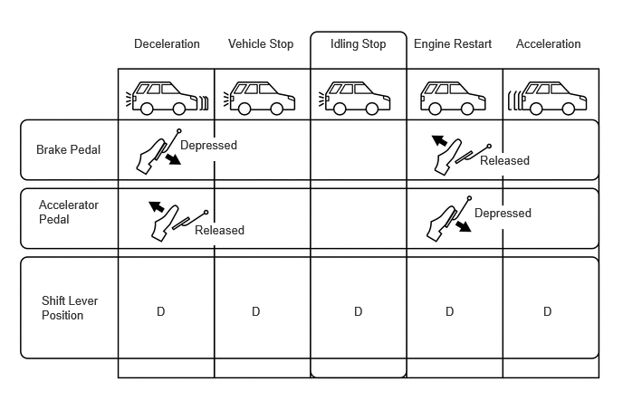

| Last Modified: 10-07-2025 | 6.11:8.1.0 | Doc ID: NM100000002GYDV |
| Model Year Start: 2024 | Model: Tacoma | Prod Date Range: [12/2023 - ] |
| Title: IDLING STOP CONTROL: STOP AND START: GENERAL; 2024 - 2026 MY Tacoma Tacoma HV [12/2023 - ] | ||
GENERAL
OUTLINE
(a) To achieve low emissions and enhanced fuel economy, the stop and start system has been developed.
(b) The stop and start system automatically stops the engine when the vehicle comes to a stop, such as when the vehicle stops at a red traffic light. When starting off, the engine is automatically restarted without requiring any extra activity from the driver.
(c) The stop and start system consists of an engine stop and start ECU, backup boost converter and starter assembly.
(d) Based on signals from various sensors, switches, and the ECM, the engine stop and start ECU controls the stopping and starting of the engine.
(e) When the engine is stopped, the ECM stores the crankshaft angle. This is used to determine which cylinder to inject fuel into and ignite the next time the engine is restarted. This shortens the amount of time necessary to restart the engine.
(f) To allow management of the lifespan of the starter assembly, the engine stop and start ECU counts the number of times the starter operates. If the number exceeds a threshold, the ECU blinks the stop and start cancel indicator light to inform the driver that a replacement is required.
HINT:
After the starter assembly has been replaced, it is necessary to clear the record of the number of times that the starter assembly has been operated. For details, refer to the Repair Manual.
(g) During idling stop, the oil pump with solenoid assembly operates to ensure a stable ATF pressure, achieving a smooth start off.
(h) A hill-start assist function is provided in order to assist smooth starting on a slope while the engine is restarted after idling stop. The skid control ECU retains the brake hydraulic pressure until sufficient driving force is generated.
(i) Idle stop is now performed even when the vehicle is stopped through the brake hold function. As a result, the idle stop time has increased to achieve a greater reduction in fuel consumption amount.
(j) Through the use of the stop and start system for a Direct injection 4-stroke gasoline engine Superior version (D-4S) engine, the engine restart time has been reduced compared to the port injection type engine.
(k) Operating conditions of the stop and start system various advice and warnings are provided using the multi-information display, stop and start indicator light and stop and start cancel indicator light in the combination meter assembly.
(l) Through the use of a high performance battery and high-precision battery state sensor assembly, the amount of time until the threshold value for idle stop prohibition is reached has been extended and the idle stop operation permission range has been expanded.
(m) An operation limit which prohibits stop and start system control under certain conditions is provided to protect the battery when a non-specified battery is used.
(n) Stop and start operation time when the air conditioning is operating can be changed between "Standard" and "Extended (the stop and start system has priority)".